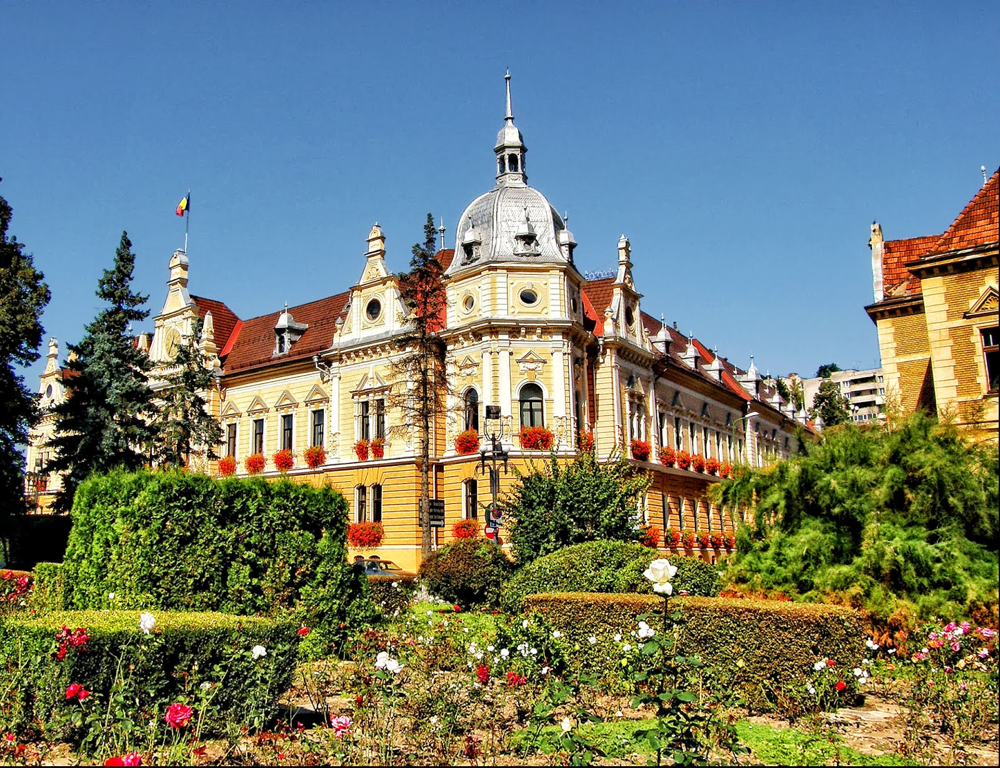

TREASURE HUNT
by Intercultural Marathon
Plimbă-te pe străzi fermecătoare, admiră obiectivele istorice și simte spiritul vibrant al orașului—fără grabă,
doar pași, povești și bucuria explorării!
Livada Poștei
Începe-ți călătoria aici și pășește în inima vibrantă a spiritului maratonului din Brașov.
Provocare: În ce an a fost înființată Universitatea Transilvania?
Piața Sfatului
Piața principală animată a Brașovului, plină de culoare, istorie și priveliști perfecte ale munților din jur.
Provocare: Descoperă vechiul nume al Brașovului și simbolul său ilustrat pe muzeul din centrul pieței!
Biserica Neagră
O capodoperă gotică ce se înalță măreț—apropie-te și simte greutatea trecutului grandios al Brașovului.
Provocare: Caută și citește povestea despre motivul pentru care biserica este numită Neagră (Neagra)?
Poarta Ecaterina
O poartă de poveste cu turnuri și farmec, păstrând povești din zilele medievale ale Brașovului.
Provocare: De ce se numesc Porțile Ecaterina?
Bastionul Țesătorilor
Odată o fortăreață puternică, acum un martor liniștit al apărării și moștenirii meșteșugărești a orașului.
Provocare: Care a fost scopul acestui bastion?
Palatul Prefecturii
O clădire elegantă a autorității—fațada sa impunătoare reflectă mândria civică și istoria Brașovului.
Provocare: Ce stil arhitectural are această clădire?
Primăria Brașov
Inima administrativă a orașului—clasică, calmă și centrală în ritmul modern al Brașovului.
Provocare: Ce reprezintă lupul din fața clădirii?

Biserica Sfântul Martin
Una dintre cele mai vechi biserici din Brașov—ascunsă, liniștită și plină de suflet medieval și mister.
Provocare: Care este anul construcției acestei biserici?
Biroul Innovation Education Lab!
Locul unde va avea loc Maratonul Intercultural!
Adresă: Strada Ion Ratiu 2
Felicitări!
Ai ajuns la linia de sosire! Trage aer în piept, bucură-te de priveliște—povestea Brașovului merge cu tine.
Urmărește Intercultural Marathon pentru mai multe evenimente!